<!DOCTYPE HTML>
<!--
	Dopetrope by HTML5 UP
	html5up.net | @ajlkn
	Free for personal and commercial use under the CCA 3.0 license (html5up.net/license)
-->
<html>
	<head>
		<title>WONYOUNG PARK</title>
		<meta charset="utf-8" />
		<meta name="viewport" content="width=device-width, initial-scale=1" />
		<!--[if lte IE 8]><script src="assets/js/ie/html5shiv.js"></script><![endif]-->
		<link rel="stylesheet" href="assets/css/main.css" />
		<!--[if lte IE 8]><link rel="stylesheet" href="assets/css/ie8.css" /><![endif]-->
	</head>
	<body class="right-sidebar">
		<div id="page-wrapper">

			<!-- Header -->
				<div id="header-wrapper">
					<div id="header">

						<!-- Logo -->
							<h1><a href="index.html">WONYOUNG PARK</a></h1>

						<!-- Nav -->
							<nav id="nav">
								<ul>
									<li class="current"><a href="index.html">PORTFOLIO</a></li>
									<li><a href="CV.html">CV</a></li>
									<li><a href="About.html">ABOUT</a></li>

								</ul>
							</nav>

					</div>
				</div>

			<!-- Main -->
				<div id="main-wrapper">
					<a class="image featured">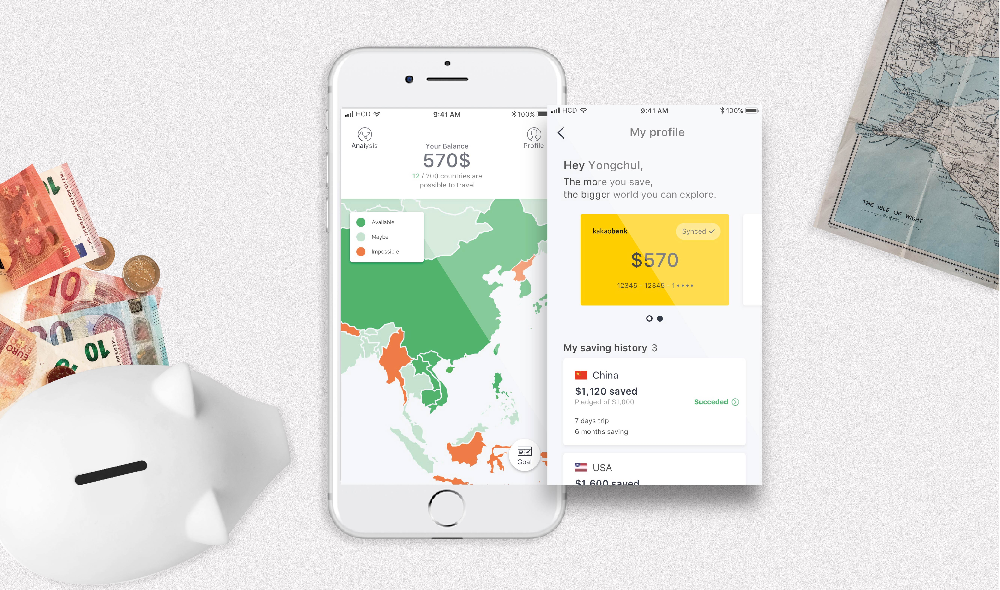</a>
					<div class="container">
						<div class="row">
							<div class="8u 12u(mobile)">
								<!-- Content -->
									<article class="box post">
										<!-- <a class="image featured"></a> -->
										<header>
											<h2>Money Planet</h2>
											<p>2017 fall [HCD class, UNIST CDE]</p>
										</header>

										<p>
											The starting point of this project is CHI 2014 paper,
											<a href="https://homes.cs.washington.edu/~depstein/hcde596/papers/kaye_chi14.pdf" target="_blank" title"CHI2014 Money Talks Paper">Money Talks</a>.
											It is the study of how people earn, save, spend and understand money and their personal and family finances.
											In this paper, the researchers present unique and diverse ways of exploring the sensitive topic,
											money and propose improving tools to aid people in managing and planning people’s finances.
											What our team was curious about is how university students, the specific target,
											understand and manage their finance. This is the point where we think of design question.
											<dl>
												<b>‘How can we help university students to manage their finance without stress?’</b>
											</dl>
										</p>


										<p>
											It is a service that helps a user to track and manage his/her finance through the color coded world map
											synced with the user’s bank balance. The green color means a user has enough money to travel the country.
											On the other hand, the orange color of the country represents that the budget to travel is not enough.
											With <b><i>‘Money Planet’</i></b>, users can manage the money with exploring the wished travel destinations rather than stressful numbers.
										</p>
										<a class="image featured">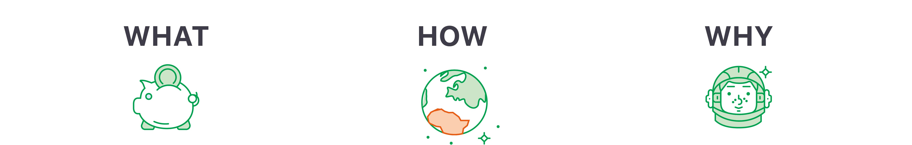</a>
										<p>
											<ol>
												<li><b>WHAT:</b> The app supports people to track/manage their finance.</li>
												<li><b>HOW:</b> Through color coded map synced with money and providing tips, the app helps user to achieve financial goal.</li>
												<li><b>WHY:</b> With an abstract money management approach, users can be less stressed.</li>
											</ol>
										</p>
										<a class="image featured">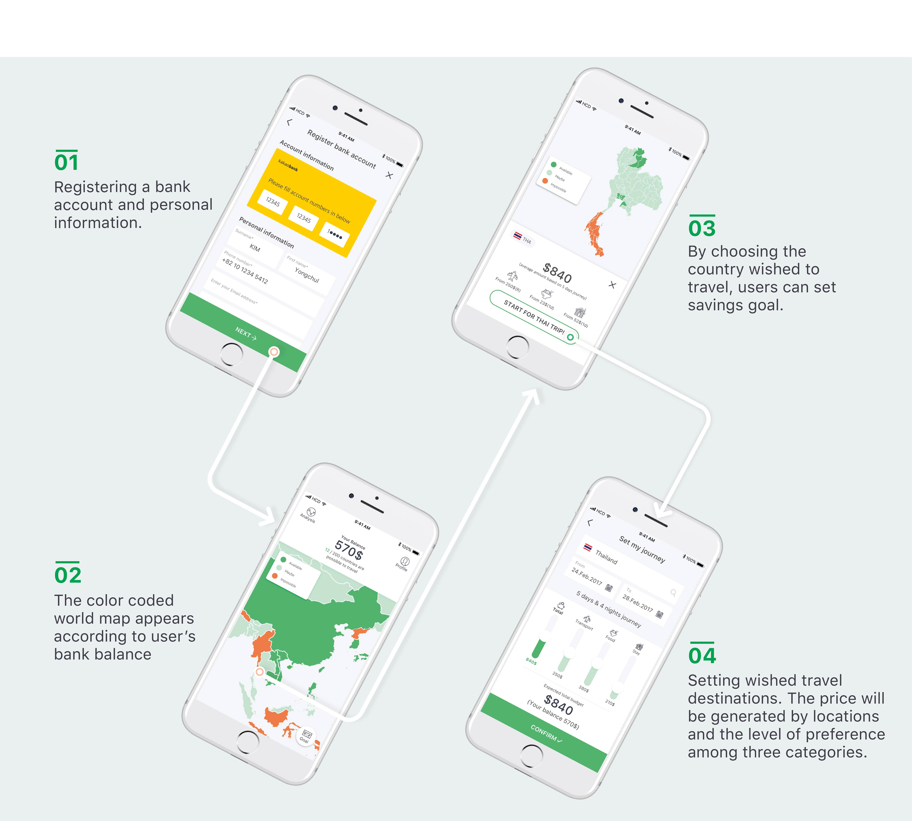</a>
										<p>
											This is a schematization of process that registers bank account
											and sets financial goal by targeting a country wished to travel.
										</p>
										<a class="image featured">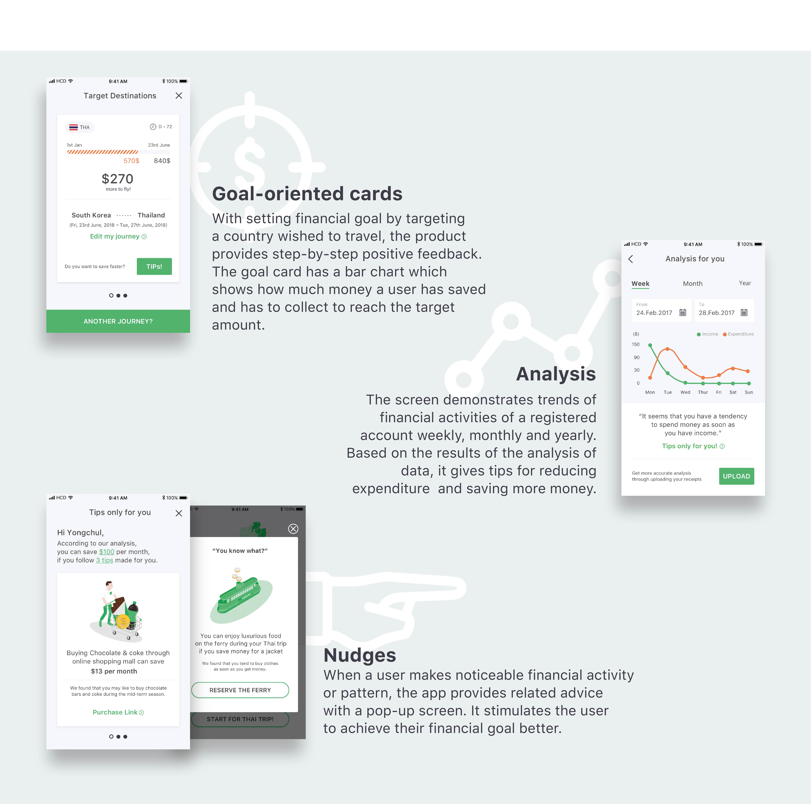</a>
										<p>
											<b><i>‘Money Planet’</i></b> leads user’s finance management in a positive way in a variety of ways.
											It provides step-by-step feedback with goal-oriented card, analyzes economic activity periodically
											and gives personalized nudge pop-up screen at a right timing.
										</p>

										<p style="padding-top:2em">
											<b>Video</b>
											<iframe width=100% height=345
											src="https://www.youtube.com/embed/4GZBEhb6eFQ">
											</iframe>


									</article>
									<header class="major">
										<h2>Process</h2>
									</header>

									<!-- User Study -->
									<section>
										<header>
											<h3>User Study</h3>
										</header>
										<a class="image featured">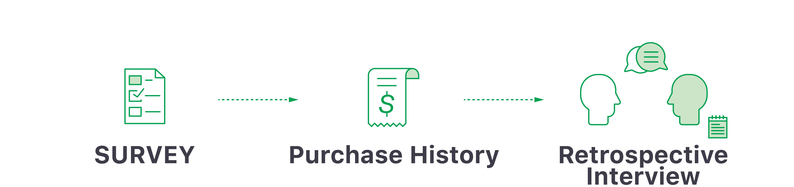</a>
										<p>
											In this step, <b><i>triangulation</i></b>, multiple methods and multiple metrics, approach is considered in order to enhance confidence
											in the ensuing findings and prevent having bias. Three user study methods are conducted; Survey, Purchase history and Retrospective Interview.
										</p>

										<p style="color: #00A24F; font-weight:500; font-size:120%; padding-top:30px;">Survey</p>
										<a class="image featured">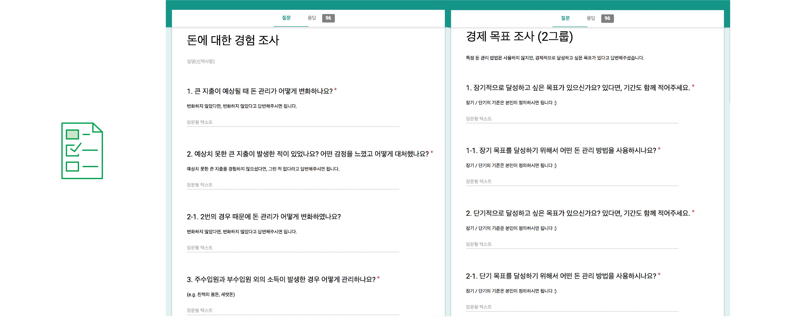</a>
										<p>
											<ul>
												<li><b>Subject:</b> University Undergraduates & Graduates</li>
												<li><b>Participant:</b> 96</li>
												<li>The purpose of the survey is to figure out financial patterns of our target user by dividing into
													two different student groups who manage own finance or who do not.</li>
											</ul>
										</p>

										<p style="color: #00A24F; font-weight:500; font-size:120%; padding-top:30px;">Purchase History</p>
										<a class="image featured">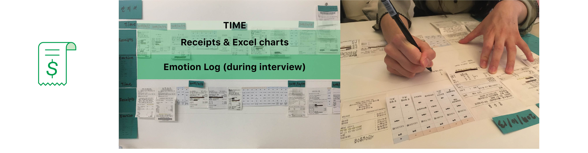</a>
										<p>
											<ul>
												<li><b>Subject:</b> University Undergraduates & Graduates</li>
												<li><b>Participant:</b> 10 (5 financial serve users, 5 non-users)</li>
												<li>All participants are asked to collect receipts for 7 day. With receipts, purchase history is made
													for asking participants to recored related emotion with each purchase.
													It helps researchers to understand behind reasons of economic activities which hard to find reasons when only looking at raw data.</li>
											</ul>
										</p>

										<p style="color: #00A24F; font-weight:500; font-size:120%; padding-top:30px;">Retrospective Interview</p>
										<a class="image featured">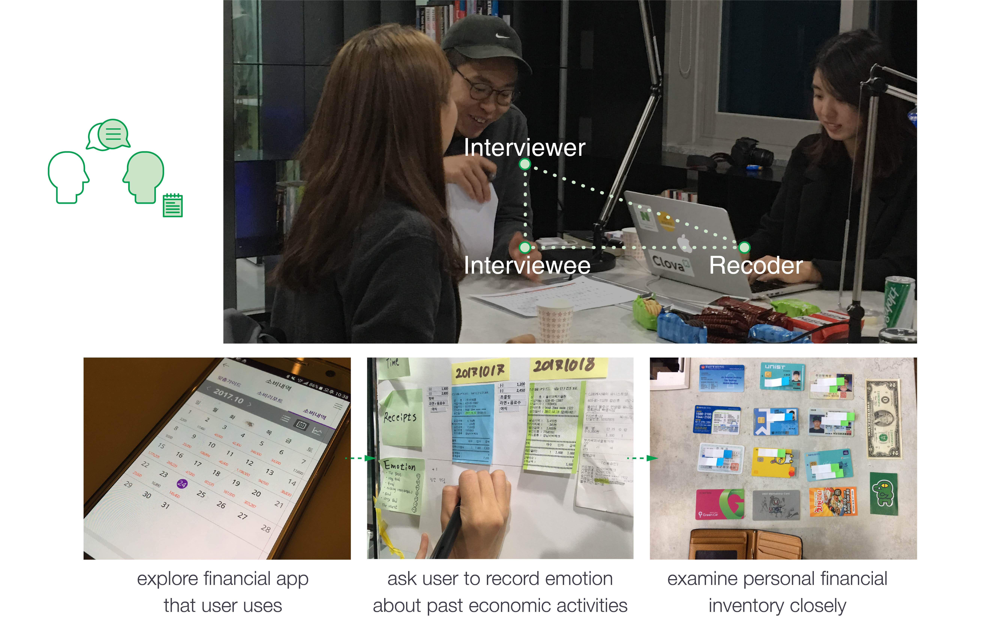</a>
										<p>
											<ul>
												<li><b>Subject:</b> University Undergraduates & Graduates</li>
												<li><b>Participant:</b> 10 (5 financial serve users, 5 non-users)</li>
												<li>It is planned for finding latent participants thoughts by exploring existing methods of financial management that users use,
													asking emotion log on purchase history board and examining personal financial inventory closely. </li>
											</ul>
										</p>
									</section>

									<!--Analysis-->
									<section>
										<header>
											<h3>Analysis</h3>
										</header>

										<a class="image featured">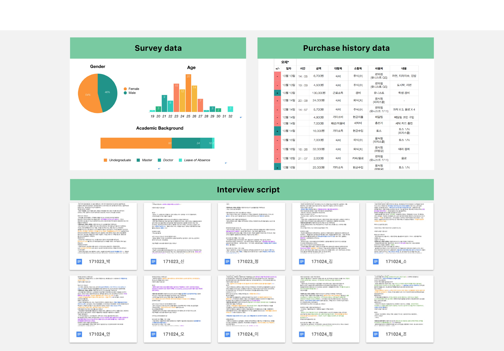</a>
										<p>
											To protect privacy, at this stage, all personal information of users is anonymously coded.
											With survey, quantitative data is obtained which help to draw pattern of target users,
											university students. Through purchase history and retrospective interview,
											we get qualitative data that could be missed by conducting survey method only.
											As a result of analysis, key findings are found which can lead to design implications.
										</p>

										<p>
											<ul class="default">
												<b class="contact">Key findings</b>
												<li>University students manage their finance in abstract way</li>
												<li>They do not regret impulsive expenditure caused by stress</li>
												<li>They emphasize that money issue is related with stress</li>
												<li>They do not want to pay much attention to finance management because they want to concentrate on studies</li>
												<li>Travel abroad is the most common purpose of student’s financial management</li>
											</ul>
										</p>

										<p style="color: #FD962D; font-weight:500; font-size:120%; padding-top:30px;">Persona</p>
										<a class="image featured">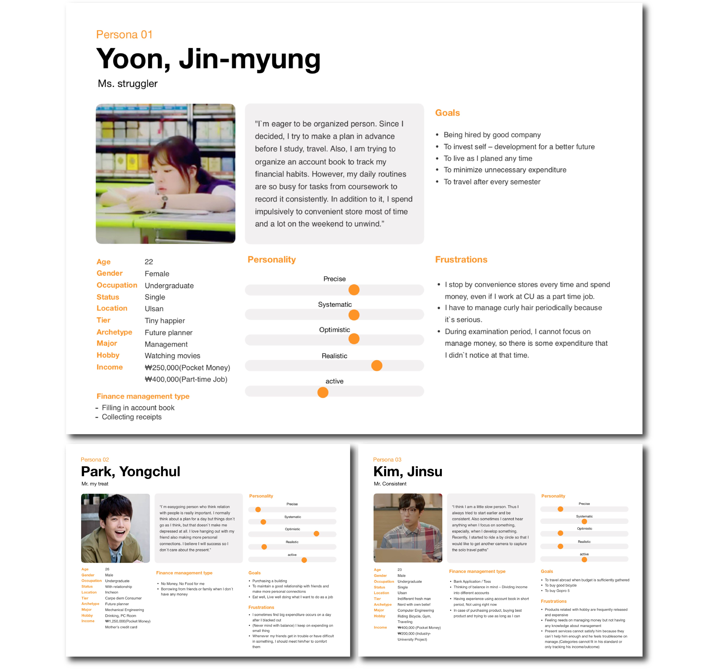</a>
										<p>
											By integrating the results of analysis and key findings, we conceive three fictional characters, persona.
											It represents different user types and helps us to easily understand and access what user needs, experiences and so on.
										</p>
									</section>

									<!--Ideation-->
									<section>
										<header>
											<h3>Ideation</h3>
										</header>

										<p style="color: #00A24F; font-weight:500; font-size:120%; padding-top:30px;">brainstorming</p>
										<a class="image featured">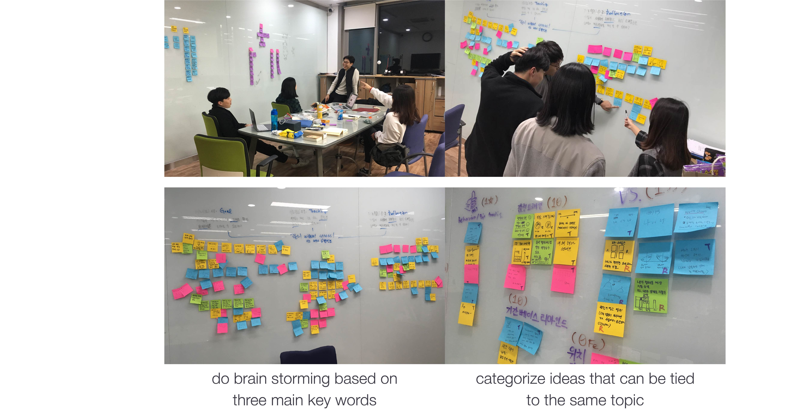</a>
										<p>
											<ol>
												<li>At brain storming stage, we set three main keywords.Each keyword focuses on different part
													of finance management step. After generating ideas, we categorize them which can be tied to a same topic.</li>
												<li><b>Goal: </b>accommodate users to set their goal and stimulus user to achieve goals.</li>
												<li><b>Tracking: </b>generate the new way of tracking financial activity, at some point between too automatic and too manual way.</li>
												<li><b>Reflection: </b>make users look back their financial activity and induce behavioral change without stress.</li>
											</ol>
										</p>

										<p style="color: #00A24F; font-weight:500; font-size:120%; padding-top:30px;">4 most promising ideas (Total: 22 ideas)</p>
										<a class="image featured">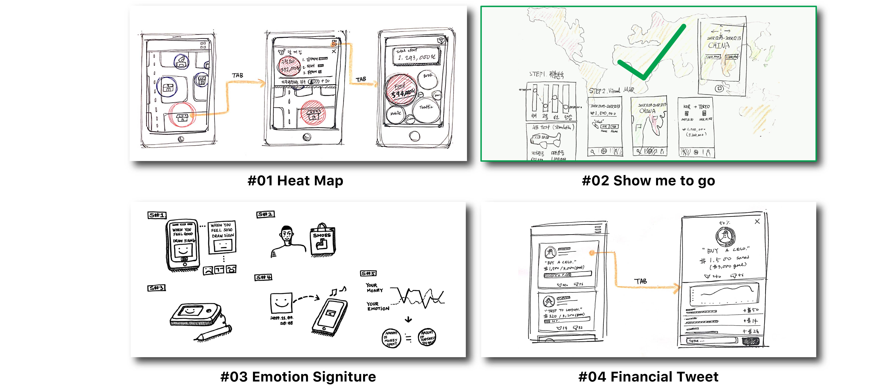</a>
										<p>
											<ol>
												<li>A total of 22 ideas are generated through brainstorming and idea categorization.
													All team members divide them and sketche every idea for sharing same mental model for each concept.
													Four promising ideas are culled from the first vote and the final idea was selected through the second vote.</li>
												<li><b>Heat map: </b> Visualize the expenditure based on the location. This allows the user to know where
													his or her consumption is occurred frequently.</li>
												<li><b>Show me to go: </b>If user inputs (or automatically link with back) budget and the date for a travel,
													it shows visualized data on the map with coded color. Green means that user can travel that nation with current budget.</li>
												<li><b>Emotion Signiture: </b>This app tracks user’s emotion by analyzing the signature at store, it automatically sent to app. </li>
												<li><b>Financial Tweet: </b>Socially paired people comment on each other’s financial management.
													Users set their personal goals and post them on on the feed. </li>
											</ol>
										</p>


									</section>

									<!--Concept Generation-->
									<section>
										<header>
											<h3>Concept Generation</h3>
										</header>

										<p style="color: #00A24F; font-weight:500; font-size:120%; padding-top:30px;">Initial Prototype</p>
										<a class="image featured">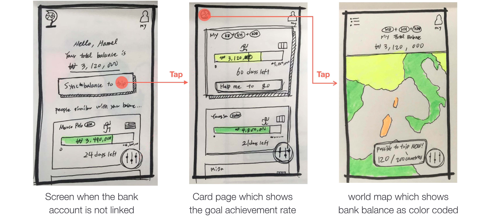</a>
										<p>
											By using invision, heuristic evaluation is conducted. The number of participants of evaluation is 6 people who take same course.
											Think aloud Method is used to discover what users really think about initial prototype.
										</p>

										<p style="color: #00A24F; font-weight:500; font-size:120%; padding-top:30px;">Heuristic Evaluation</p>
										<a class="image featured">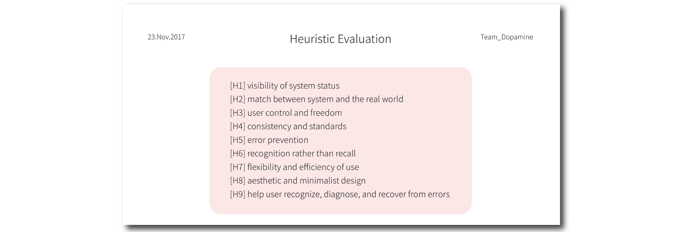</a>
										<p>
											<ul class="default">
												<class="contact">With Heuristic Evaluation, <b>4 representative problems</b> are found.
												<li>It is hard to fine where to start for using this app because there are two version of homepage, card and world map.</li>
												<li>Setting a travel goal Icon looks vague, which is located in right-side bottom. It looks like a filter button.</li>
												<li>At a world map, red seems like dangerous place.</li>
												<li>They hesitate to share their bank balance with others. It would make users depressed.</li>
											</ul>
										</p>

										<p style="color: #00A24F; font-weight:500; font-size:120%; padding-top:30px;">Mid-fy Prototype</p>
										<a class="image featured">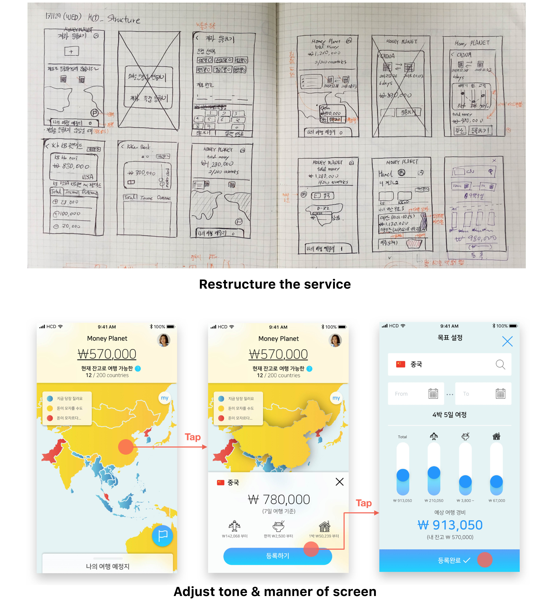</a>

										<p style="color: #00A24F; font-weight:500; font-size:120%; padding-top:30px;">Final Prototype</p>
										<a class="image featured"></a>
									</section>

							</div>
							<div class="4u 12u(mobile)">

								<!-- Sidebar -->
									<section class="box">
										<header>
											<a class="image featured">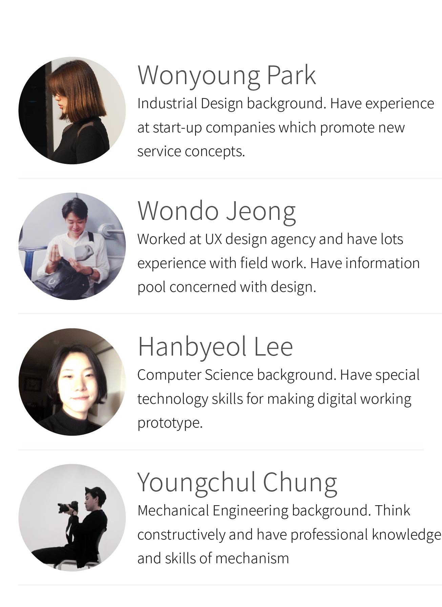</a>
										</header>
										<b style="padding-left:13px">My Role</b>
										<p style="padding-left:13px; font-size:80%">All team members participated in user study and ideation. At the user study stage,
											I took the role of a project manager who designed the schedules to run the experiment efficiently,
											and in the interviews I played the role of interviewer or scripter. In the concept development stage,
											I have a responsible for defining service structure and deciding tone and manners of ‘money planet’.
										</p>

										<ul class="divided" style="padding-left:13px">
											<li><a href="https://www.youtube.com/watch?v=l_K68DY-s_U" target="_blank" title="Money_Planet_Video">Video</a></li>
											<li><a href="reports/Money_Planet/Money_Planet.pdf" target="_blank" title="Money_Planet_report">report</a></li>
										</ul>
									</section>


							</div>
						</div>
						<!-- Copyright -->
							<div id="copyright">
								<ul class="links">
									<li>WONYOUNG PARK </li><li> Copyright &copy; 2020 All rights reserved.</li>
									<!-- <li>Design: <a href="http://html5up.net">HTML5 UP</a></li> -->
								</ul>
							</div>
					</div>
				</div>

		</div>

		<!-- Scripts -->
			<script src="assets/js/jquery.min.js"></script>
			<script src="assets/js/jquery.dropotron.min.js"></script>
			<script src="assets/js/skel.min.js"></script>
			<script src="assets/js/skel-viewport.min.js"></script>
			<script src="assets/js/util.js"></script>
			<!--[if lte IE 8]><script src="assets/js/ie/respond.min.js"></script><![endif]-->
			<script src="assets/js/main.js"></script>

	</body>
</html>
